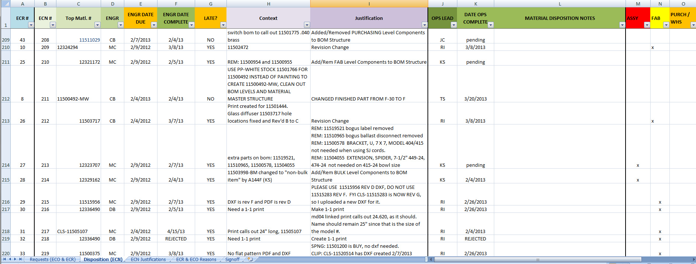
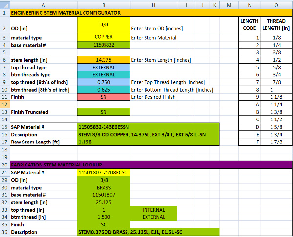

Experience Streamlining High Mix Low Volume
Architectural Lighting is an industry that has a long way to go yet in design consolidation. Fixtures are typically made by designers and engineers with a wide variety of styles and skills resulting in products that can be difficult to manufacture, costly, and not easily modifiable. The labor-intensive processes in both designing modifications and also the procurement, manufacture, and assembly of the fixture itself eats into the margin that could reach the company's bottom-line from revenue-generating sales.
As an engineer pressed to reduce design time, reduce cost, and ensure reliable quality products shipped on-time I developed software tools to streamline the design and interdepartment communication of change processes. I created a system to automatically map the material finishing routing for 5 discrete categories of parts, made of 7 discrete base materials, into 50 different finish specifications. I also created a similar system for the complexity of the stem configurations. I created an ECR/ECO/ECN system that maintained the current state of changes and their disposition to specified departments within the company.
Distribution of the tools I developed over the company's local networks allowed instantaneous sharing of information between departments without having to interrupt the workflow of other employees. These tools improved completion time of changes through the organization as well as data consistency within the SAP database.

